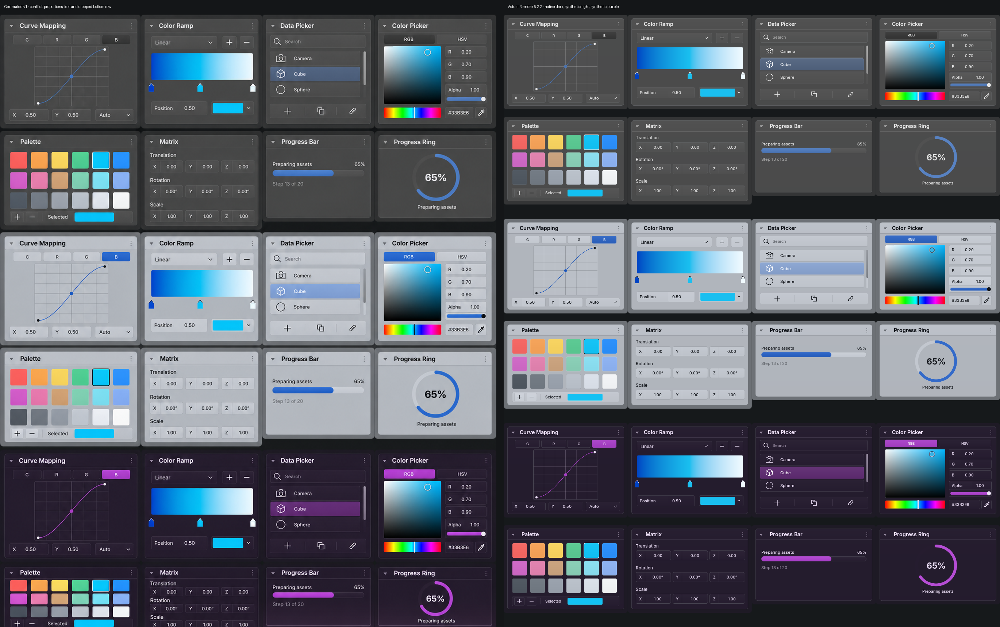
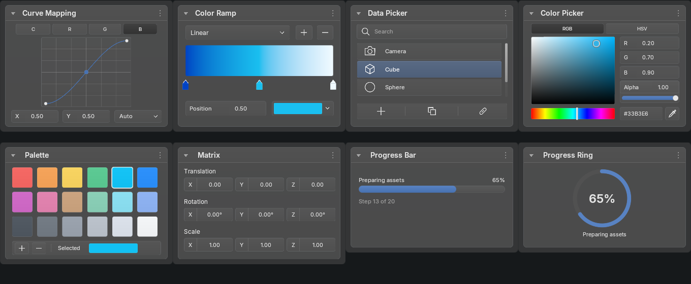
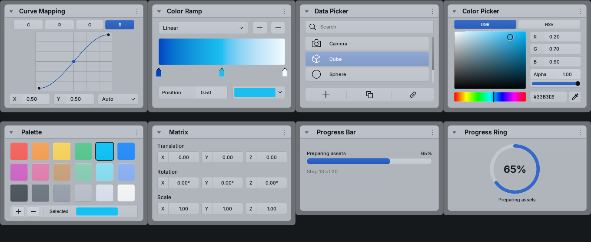
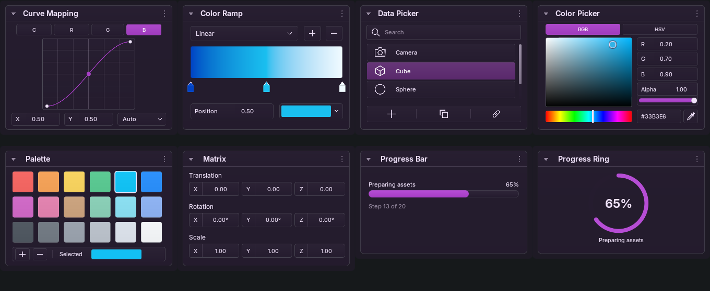

Actual production painters: native dark, synthetic light and synthetic purple. Source BVT semantic roles supply RGB; existing glass materials supply opacity. Bound colors are unchanged.
The generated sheet changed proportions, text and cropped its bottom row. This remains an explicit reference conflict; no exact visual acceptance is claimed.
Validation notes · Overlay · Difference · Built-in generation prompt



